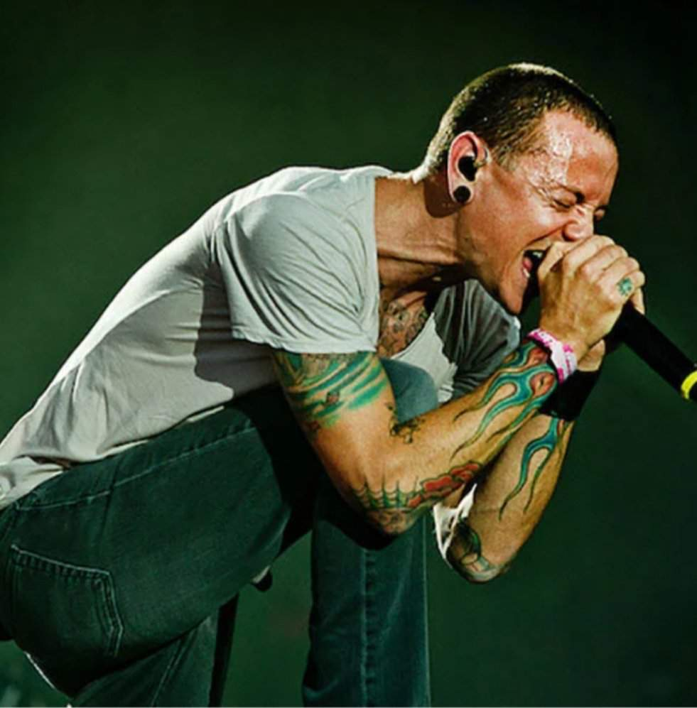

Gutural es un sonido creado o relacionado con la garganta. Deriva del latín gutturalis que tiene como raíz la palabra ‘garganta’.
Gutural se asocia a ruidos, gritos y cantos guturales. Los ruidos guturales son aquellos que fuerzan la garganta para emitir sonidos como algunas palabras del abecedario como la letra ‘K’.
Los gritos guturales generalmente son asociados a gritos aterradores pero con el aprendizaje de técnicas adecuadas puede convertirse en un canto.
Los tuvas, un pueblo de origen mongol al sur de Siberia, dominan la técnica del canto gutural, canto armónico o canto difónico. En el canto kh öö meior khoomii los tuvas consiguen cantar dos notas al mismo tiempo: uno agudo como una flauta y otro gutural usando la garganta.
El canto gutural moderno es asociado a las bandas de música Metal en todas sus derivaciones: grindcore, deathcore, hardcore y death metal. El canto gutural en este tipo de música es llamado en inglés death growl.

"Given Up" –en español: "Rendido"– (la que está sonando actualmente) es el cuarto sencillo del álbum Minutes to Midnight de la banda de rock Linkin Park. La canción fue interpretada por primera vez, al igual que "What I've Done" y "Bleed It Out", el 28 de abril de 2007 en Berlín, Alemania, en las sesiones de AOL. Estas interpretaciones fueron lanzadas en la página de AOL el 5 de mayo de ese año. En el sencillo de "Bleed It Out" se pueden encontrar esas pistas.
"Given Up" es de las pocas canciones del álbum en que aún se puede percibir rudeza musical dado que Minutes to Midnight es un álbum que supuso un cambio de estilo en la banda. Siendo la segunda canción, da la bienvenida al disco, dado que el primer tema del álbum, "Wake", es instrumental. Es por eso que "Given Up" habla sobre el sufrimiento y sentimiento propios de todo el álbum. Tiene un estilo claramente influenciado por el Hardcore Punk.
El gutural de Chester Bennington en la canción "Given Up" es uno de los momentos más impresionantes y memorables de su carrera. En esta canción, Chester desata su voz con una increíble exhibición de potencia vocal que dura 17 segundos. Esta interpretación vocal se produce cerca del final de la canción y se destaca por su intensidad y emotividad.
El gutural de Chester comienza con un grito desgarrador y lleno de angustia. Su voz se vuelve rasposa y áspera, transmitiendo una profunda sensación de dolor y desesperación. La letra de la canción refleja sentimientos de frustración y abandono, y Chester logra expresar estas emociones de manera visceral a través de su voz.
A medida que avanza la interpretación, Chester aumenta la intensidad de su gutural, y su voz parece estar al borde del colapso. Es una muestra impresionante de su habilidad para controlar y manipular su voz para transmitir emociones poderosas. Su voz se vuelve casi inhumana, como si estuviera luchando contra sus propios demonios internos.
La duración de 17 segundos de esta exhibición vocal es notable, ya que mantener un tono gutural durante tanto tiempo requiere una gran resistencia vocal y control. Chester Bennington logra mantener esta nota con una fuerza y determinación impresionantes, lo que contribuye significativamente a la intensidad y la emotividad de la canción.
En resumen, el gutural de Chester Bennington en "Given Up" es una muestra sobresaliente de su talento vocal y su capacidad para transmitir emociones profundas a través de su voz. Es un momento icónico en la música que demuestra la pasión y la intensidad que Chester ponía en su arte.
"Given Up" formó parte de la banda sonora de la segunda parte de la película "Crank", titulada "Crank 2: High Voltage". En ambas películas de "Crank", Chester Bennington hizo una pequeña actuación.